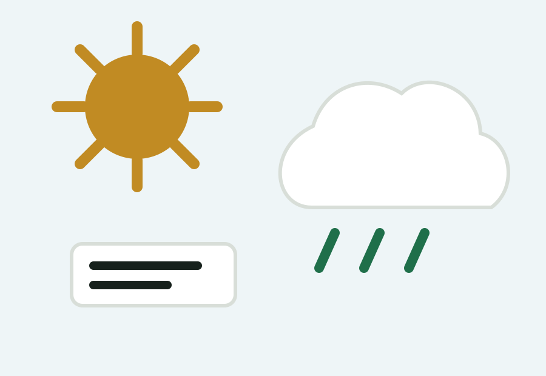

Host city guide
World Cup 2026 in Vancouver
Vancouver is one of the 2026 host markets. Use this guide to compare stadium access, airport choices, hotel areas, weather and match-day planning before booking.
Matches and stadium
BC Place is the Vancouver venue for World Cup 2026. Match assignments, kickoff times and ticket details should be checked against official tournament sources before travel.
Airport planning
Main airport options: Vancouver International Airport. Compare arrival time, hotel area and match-day route before booking flights.
Where to stay
Downtown, Yaletown and waterfront areas are practical for visitors.
Weather notes
Summer is usually mild, but rain remains possible.

Transport
Build a route before match day
Save the stadium route, return plan and hotel address offline. Large events can make rideshare and transit queues longer than expected.

Hotels
Compare convenience and cost
The closest hotel is not always the best trip base. Balance airport access, sightseeing, stadium travel and late-night return plans.

Weather
Pack for the local summer
Check forecasts close to match day and prepare for heat, rain, cool evenings or long outdoor waits depending on the city.

Itinerary
Use non-match hours well
Add food districts, museums, waterfronts, fan zones or day trips to make the visit useful beyond the stadium.
Vancouver deep dive
Plan BC Place, downtown hotels and Canada routes
Advertisement
City-level space for useful hotel, transport or travel service recommendations after editorial review.